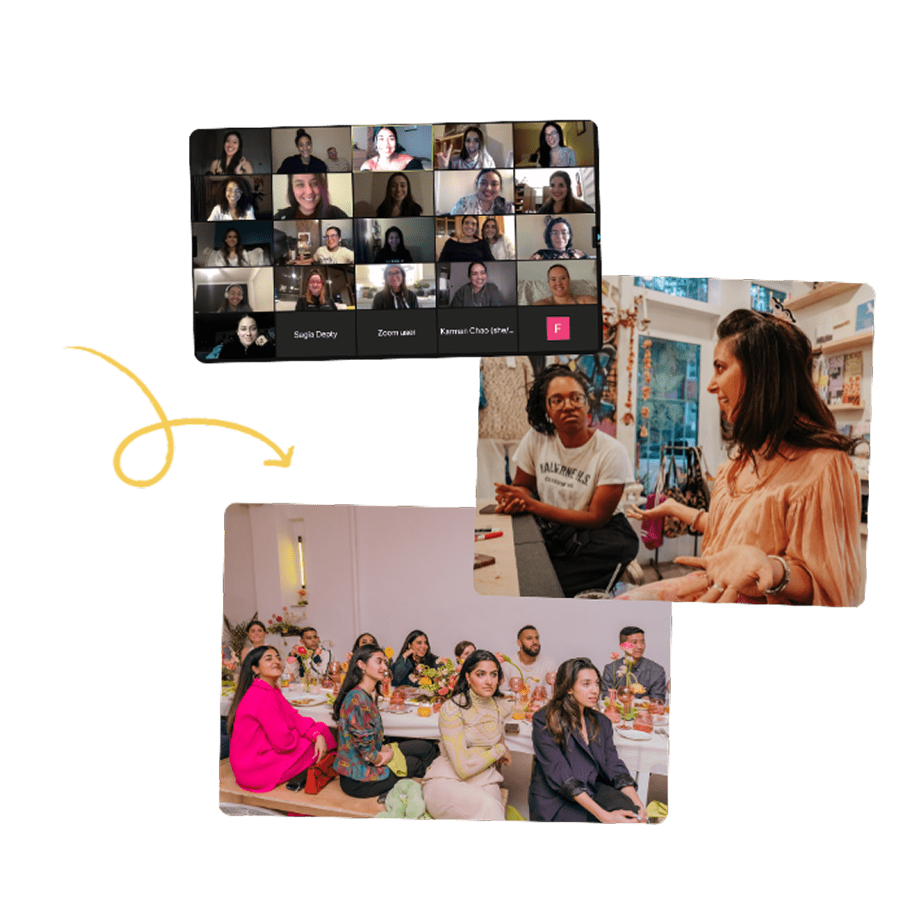
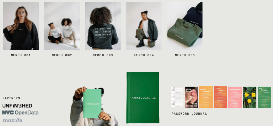
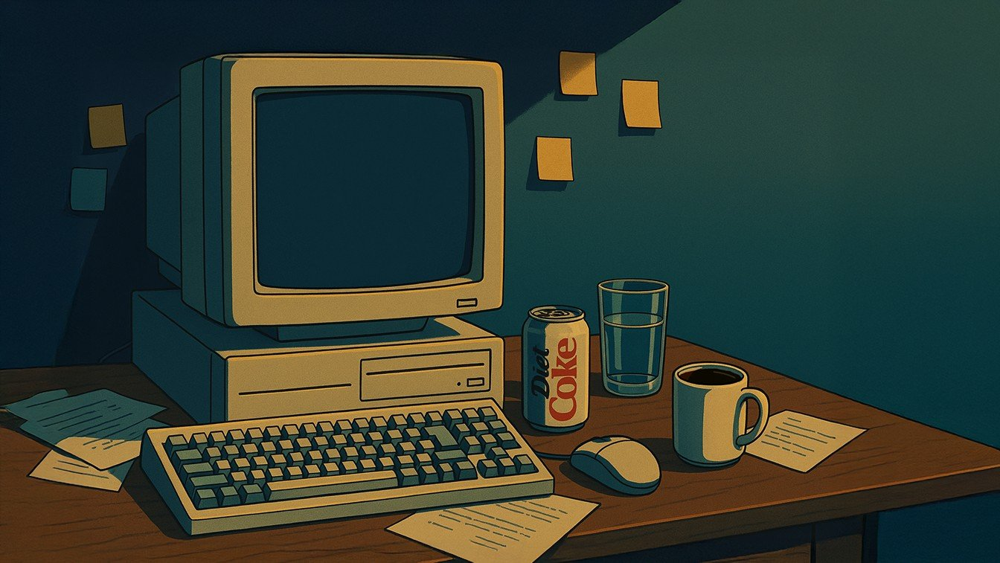
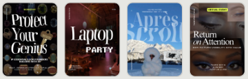
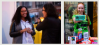
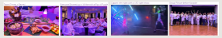

OurKind Therapy
Brand and community infrastructure for a therapy practice: 3x monthly inquiries through organic channels.
I build brands people want to participate in, not just hear from.
Marketing strategist with 10+ years across B2B SaaS, consumer tech and mission-driven companies. I help people rethink their relationship with tech and build connection.
Worked withMenlo Security, Guru, B Lab, Cyber Collective, Mozilla, Cisco, Filecoin Foundation
Recognized byAnthem Awards (Responsible Technology), CMA Top 100 Strategists
Spoke atColumbia University, New America, NYC Open Data Week, Customer Marketing Summit (two-time host)
Global impact


Connected creator partners (Mozilla, Cisco, Filecoin Foundation, Stardust, AdoreMe), convenings, campaigns and merch into one story, with Internet Street Smarts at the center.
Directed three Cybersecurity Awareness Month campaigns and shaped the impact narratives used with funders and partners.
Created a password journal with digital safety tips to bring teachings IRL. Hosted convenings with creator, impact and brand partners on topics such as misinformation and Web3 privacy.
Co-designed the signature program with 100 global advocates, and built in pre- and post-program surveys and listening sessions with 500+ participants.
Turned program data into evidence that secured $600K+ from Omidyar, Hewlett and the Archewell Foundation, and built revenue from events, merch and programs.
Led a team of three across comms, social, grants and community.
0 to 1 product

Designed the advocate journey and value-exchange framework. Activated it through content, a private beta community on Slack, reveal events, challenges, merch and a co-created report.
Sharpened the positioning to activate users as “Digital Culturists.”
Ran the beta with my 0→1 playbook: prototype walkthrough, product reveal events, the June 2026 launch event and the “paid to overthink” hat.
Ran the first 8 in-depth customer interviews. Built the bug-reporting workflow and customer data and feedback loop into a dashboard and recommendations for the product roadmap.
Set GTM success metrics, power-user thresholds and segmented re-engagement emails. Achieved a 55% sign-up rate from email list to beta.
Creative

I write, film and edit my own work: 250+ videos, essays and graphics across TikTok, Instagram, YouTube, LinkedIn and my Substack, Online & IRL. I also self-published Book of My Content.
Co-created cross-promotion and monetization offers with creators (Shape of Now, Internet Intimacy Cohort), and launched Women Building with AI (400+) and the Conscious Technologist Association (150+) from scratch.
Turned insights from 15+ client engagements and 10+ events into founder resources and marketing playbooks on customer marketing and 0 to 1 AI product launches.
Shipped prototypes with Claude Code, Cursor and Vercel: Year at Glance, Screen Readings and Lifestyle.AI.
“AI lives in the cloud, but trust lives in the body.” Why tech brands will need objects people can hold. Get Ready for AI Gadgets
“Time has quietly become the primary signal of belonging in AI culture.” Why builders should design for connection first. Time Is the New Belonging
“Attention means nothing without connection.” Why context now matters more than reach. Is Context the New Currency?
“We must refuse to mistake speed for direction.” What lasting builders do differently. Vibe Coding: This Generation’s Vice
“The internet doesn’t have to feel like something that’s happening to you.” People as participants, not passive users. Introducing Digital Sovereignty
Campaigns

Led the shift from print to a digital content strategy, connecting social, a new community platform (bthechange.com) and earned media into one brand presence.
Social following grew about 20% a year, and bthechange.com went from zero to 15K+ followers and 7,500 email subscribers.
Designed the 2018 B Corp Month campaign, a proof of concept for community-powered marketing that reached 650K+ people on a minimal budget. Supported the earned media strategy behind 400+ placements, including Forbes and Fast Company.
B2B programs

Grew a global advocacy program to 100+ enterprise advocates. Built an award-nominated Customer Advisory Board of 15 strategic accounts (9.6/10 satisfaction, 100% return interest).
Defined segmentation and advocacy KPIs. Early adopter programs produced $7M in pipeline, workshops contributed $2M in new business, and advocacy influenced $1M+ in revenue.
Built the customer marketing function, managed a direct report and led cross-functional initiatives. Ran a Voice of Customer program that produced 15 customer stories, mapped to sales plays with Sales Enablement.
Connected a global community, peer-to-peer learning programs, a bi-weekly newsletter to 100K+ users and a G2 review program into one product-led growth motion.
Ran product usage analysis in Pendo to find power users, which shaped who we recruited for reviews, case studies and advocacy. Turned customer stories into case studies with Sales, CS and Product.
Community programs contributed to a 68% increase in ARR, G2 reviews tripled with quarterly awards, and case studies drove a 2x conversion rate.
Brand and community infrastructure for a therapy practice: 3x monthly inquiries through organic channels.

CMO partnership covering brand narrative, go-to-market, community and the first practitioner certification.

Reframed a wellness content brand as a community of practice, with a tiered revenue model and launch plan.
No results for that search. Try a broader word like community or launch, or email callie@onlineandirl.com.